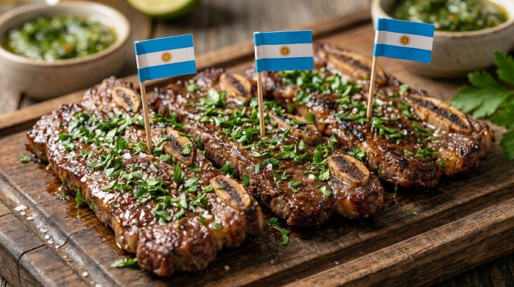

La gastronomie
En Argentine, on mange beaucoup de viande grillée. C'est ce qu'on appelle l'asado, et on le partage en famille ou avec des amis.

On mange aussi des empanadas, des petites tartes remplis de viande ou de fromage. Et on boit du maté, une boisson chaude qu'on partage.